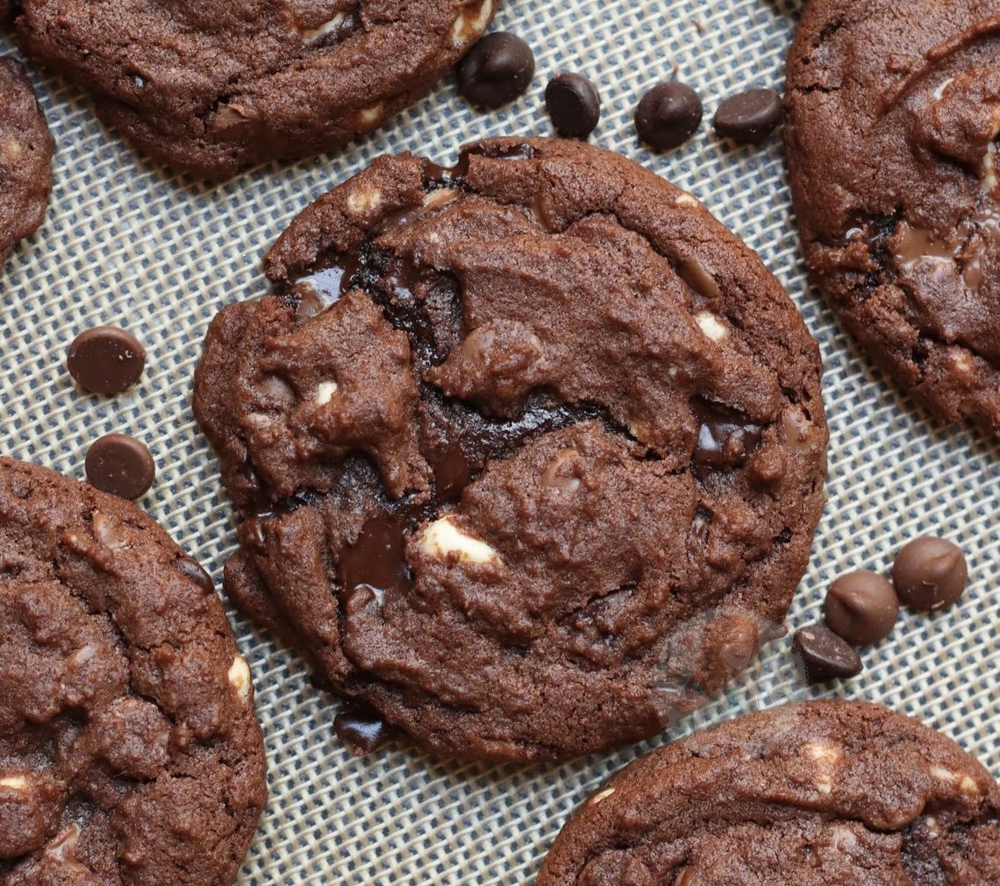
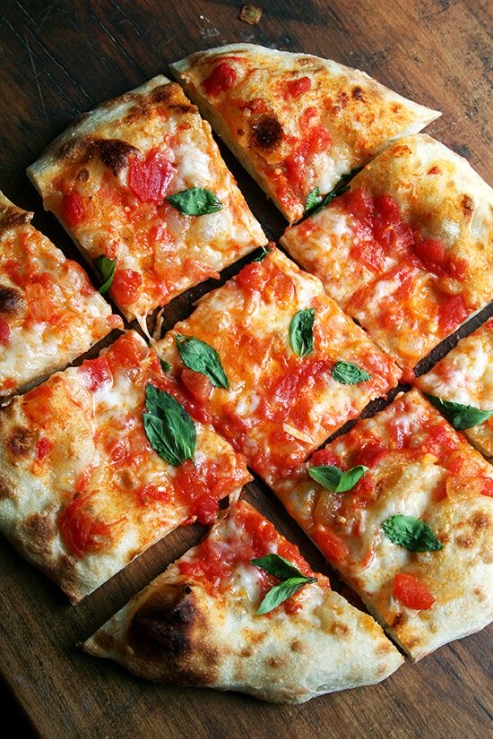
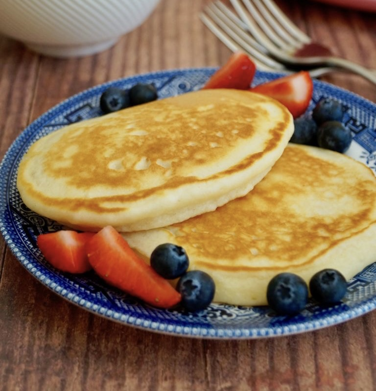

Sütögetés
Enni igazán jó dolog, főleg ha az ember maga készíti az ételt! Habár csak úgy magamnak nem szoktam sokat sütni, a barátaimnak mindig szívesen készítek valami finomat. Itt olvashattok a három kedvenc ételemről, ami sokkal finomabb, ha az ember otthon készíti el.
A teljes receptekért kattints az ételek nevére!
Csokis keksz
 A tripla csokis keksz az egyik kedvenc házi készítésű finomságom. A testvérem profi kekszkészítő, minden trükköt tud a tökéletes keksz elkészítéséhez. Előszeretettel hozok be az iskolába ebből a kekszből, mivel tényleg ínycsiklandó és egyszerű belőle jó sokat csinálni.A címhez linkelt recept nem pont, az amit használni szoktunk. A személyes kedvenc alap kekszreceptem Fűszeres Eszter Fűszer és lélek című szakácskönyvéből származik.
Mindenkinek ajánlom a tripla csokis kekszet, aki - nyilvánvalóan - odavan a csokiért. Mivel nemcsak tejcsoki, de fekete és fehér csoki is van benne, a csokoládé ízek egyszerre jelennek meg minden falatban!
Házi pizza
 A pizza az egyik legfinomabb étel szerintem. Nemcsak az íze, de a textúrája is zseniális. Persze ez mind csak akkor igaz, ha az ember jól készíti el a pizzát.Ács Bori házi nápolyi pizza receptje épp ezért nagyon jó. Nem komplikált, pizzasütő nélül is elkészíthető és egyszerűen isteni. Ropogós tészta, amit külön el lehet rakni a fridzsiderbe, hogy az ember később süthesse ki!
A kedvenc részem a pizzasütésben a feltétek előkészítése, majd rárakása a pizzára. Ha átjönnek vendégek és pizzát készítünk, mindig felveszem a rendeléseket, majd egyesével elkészítem a pizzákat. Azért is szeretem ennyire ezt csinálni, mert a Papas Pizzeria játékra emélékeztet. hehehe
Amerikai palacsinta
 Az amerikai palacsinta a legjobb reggeli. Hiába vagyok true magyar honfi, sokkal inkább preferálom ezt a palacsintát, mint a hortobágyi lapos csofi palacsintákat.Az amerikai palacsinta kicsit a piskótára vagy gofrira hajaz. Tésztája akkor tökéletes, ha nagyon levegős és puha. Épp ezért a tésztájába nemcsak sütőpor kerül, de a tojásokat külön-külön kell belerakni. A fehérjét cukorral habosítva, nagyon gyengéden kell belekeverni a tésztába.
Számomra az amerikai palacsinta egyértelműen édes kaja. Vaníliás vagy fahéjas cukorral, illetve eperrel vagy málnával fogyasztom. Azonban sokan sült szalonnával vagy kolbásszal eszik. Ez egyébként nem szokatlan, mivel a tésztát egyszerüen el lehet készíteni cukormentesen is!